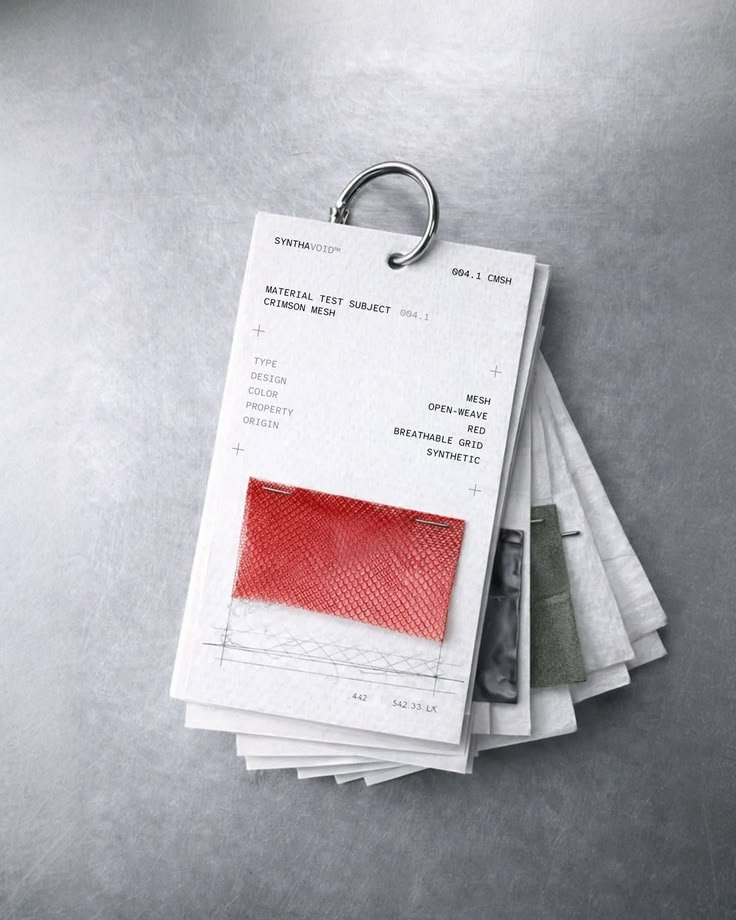
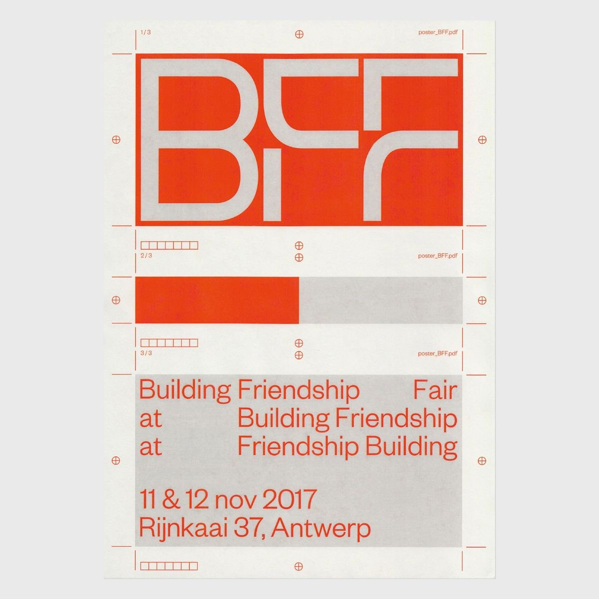
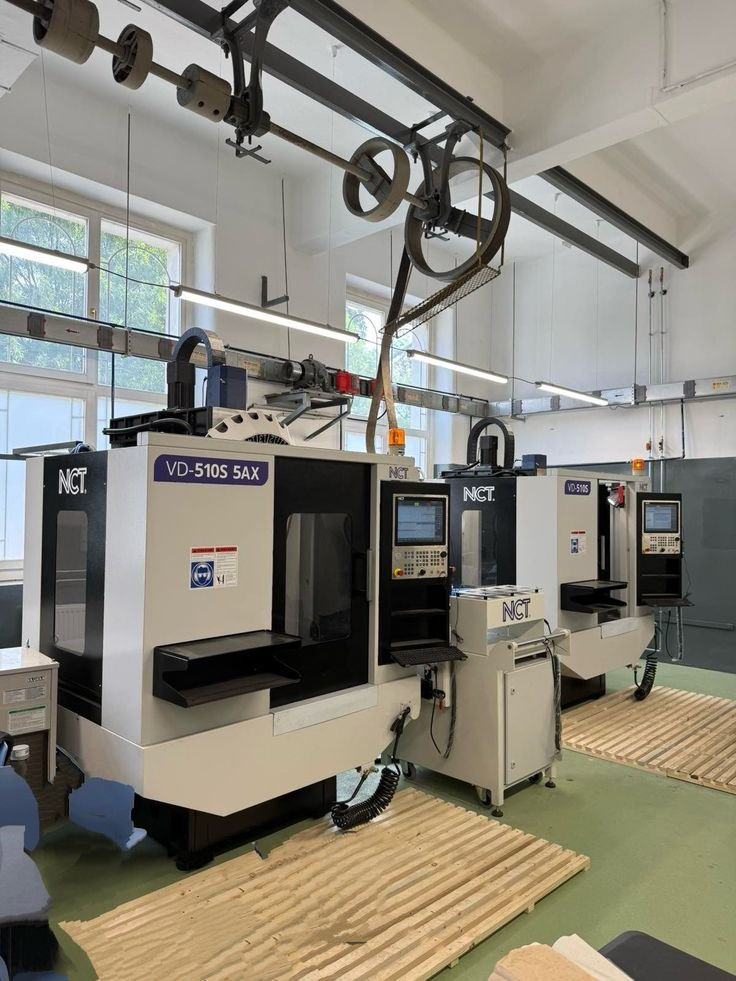
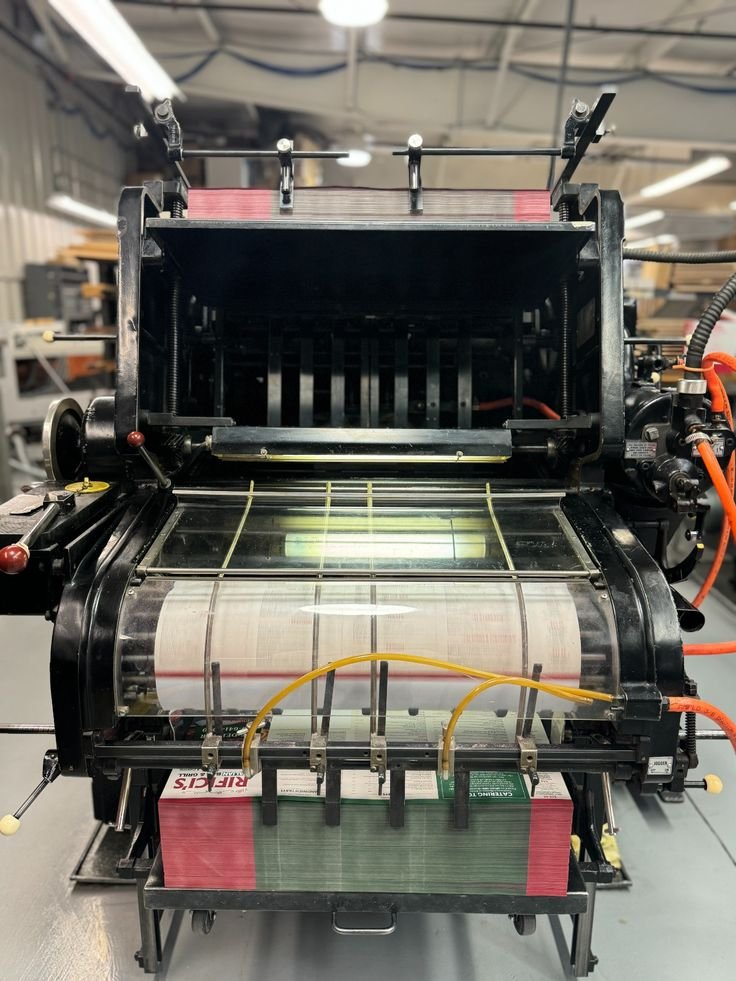
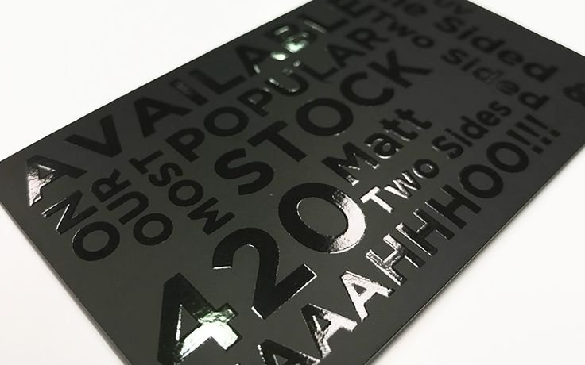
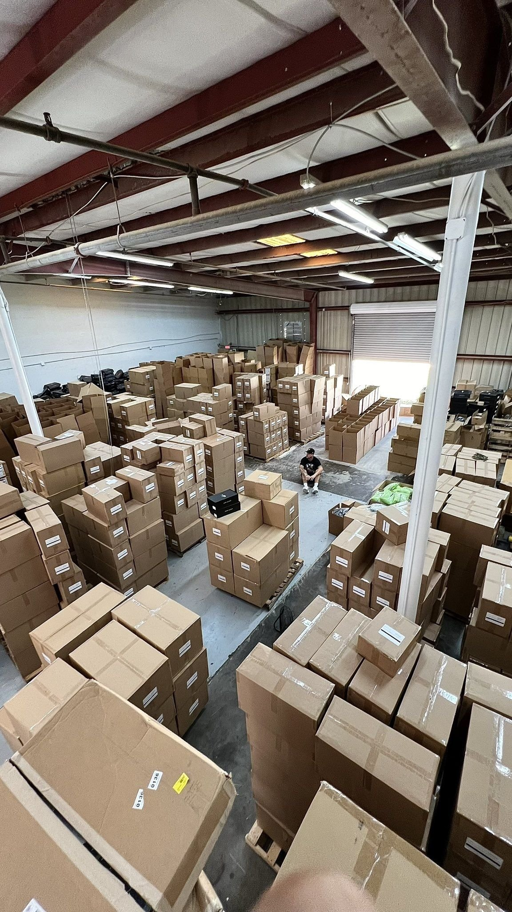

How we
make it.
Eight steps. None outsourced. Each one documented, checked, and signed off before the next begins. The same sequence, the same standard, on every order.
Paper stock, board, foil, and laminate specified to your exact requirements. Pantone references confirmed in writing. Material weights documented. No substitutions without written approval — not even close alternatives.

One physical sample made before the full run begins. Photographed from three angles, emailed to you the same day. Production does not start until you reply with written approval. Not assumed approval. Written approval.

CMYK offset or digital print, depending on run size. Colour output matched to approved Pantone references. A printed proof checked before the full sheet run begins. Registration verified across all panels.
Die-cutting, creasing, scoring, and forming all done in-house. Box construction, bag blanks, tag die-cuts — each to the dimension spec documented on the job card. Tolerance: ±1mm. Any deviation from spec is identified and corrected before the finishing stage.

Applied in-house on our foil press. Temperature, pressure, and dwell time documented per job — not guessed, documented. Gold, silver, rose gold, or custom matched foil colours. First sheet of every run checked against the approved pre-production sample before the run continues.

Applied in sequence where multiple finishes are specified. Emboss depth confirmed against the approved sample before the run continues. UV curing verified under inspection light. Soft-touch laminate applied last — never before foil, which would prevent adhesion.
10% random batch check across all completed units. Each checked against the signed-off pre-production sample: finish quality, dimensional accuracy, colour consistency, structural integrity. Any defect rate above 2% triggers a partial rerun. We dispatch nothing we wouldn't be satisfied receiving ourselves.

Pre-dispatch photos of finished units sent to you before packing begins. Your written confirmation required before dispatch is authorised. Double-boxed for all international shipments. Tracking number sent the moment the order leaves the facility — not when it arrives at the destination.

Lead times.
Production times run from pre-production sample approval. Expedited production available on request.
| Product | Production · India | Air freight | Sea freight |
|---|---|---|---|
| Rigid boxes | 12–16 days | 7–10 days | 25–35 days |
| Premium paper bags | 10–14 days | 7–10 days | 25–35 days |
| Hang tags | 7–10 days | 7–10 days | 25–35 days |
| Woven labels | 10–14 days | 7–10 days | 25–35 days |
| Full packaging suite | 16–20 days | 7–10 days | 25–35 days |
Air freight total door-to-door: 19–30 days · Sea freight total: 41–55 days